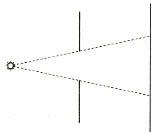
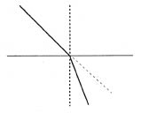
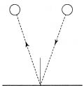

Gene birkaç deneysel olgu ile başlıyoruz. Az önce anladığımız sayı boşluktaki ışık hızı içindir. Hiç engellenmeyen ışık, boş uzayda bu çabuklukla yol alır. Havasını boşalttığımız bir cam kabın içinden öteyi görebiliriz. Gezegenleri, yıldızları, bulutsuları (nebulaları), onlardan gözümüze gelen ışık boş uzaydan geçiyorsa da, görüyoruz. İçinde hava olsun ya da olmasın, bir cam kabın içinden öteyi görebilmemiz, işte bu olgu, havanın varlığının pek az önemi olduğunu göstermektedir. Bundan dolayı, bayağı bir odada, sanki orada hiç hava yokmuş gibi optik deneyler yapabiliriz ve aynı sonucu alırız.
En basit optik olgulardan biri, ışığın doğrusal yayılmasıdır. Bunu gösteren ilkel ve çocukça bir deney anlatacağız: Nokta durumundaki bir ışık kaynağının önüne, delinmiş bir perde yerleştiriliyor. Nokta ışık kaynağı, çok küçük bir ışık kaynağıdır, örneğin karartılmış bir fenerde bırakılan küçücük bir açıklıktır. Perdedeki delik, uzaktaki bir duvarda, karanlık bir yüzey üzerinde aydınlık bir leke olarak görünecektir. [Şekil-33] Şekil, bu görüngünün, ışığın doğrusal yayılması ile nasıl bağlantılı olduğunu göstermektedir. Böyle görüngülerin hepsi; aydınlığın, karanlığın ve yarı karanlığın görüldüğü durumlar bile, ışığın boşlukta ya da havada, doğru çizgiler boyunca yayıldığı varsayımı ile açıklanabilir.

[Şekil-33]
Işığın maddeden geçtiği durumu, bir başka örnek olarak alalım. Bir ışık ışını, boşluktan geçip bir cam levhaya düşüyor. Ne olur? Doğrusal hareket yasası gene yürürlükte olsaydı, ışının yolu, noktalı çizgi olurdu. Ama gerçeklikte böyle olmaz. Şekilde gösterildiği gibi, [Şekil-34] ışının yolunda bir kırılma olur. Burada gözlediğimiz şey, kırılma (refraction) diye bilinen olaydır. Yarısı suya sokulan bir değneğin kırık gibi görünmesi, kırılmanın en iyi bilinen belirtilerinden biridir.

[Şekil-34]
Bu olgular, basit mekanik bir ışık teorisinin nasıl kurulabildiğini göstermeye yeter. Buradaki amacımız, tözlere, taneciklere, kuvvetlere dayandırılan düşüncelerin, optiğe nasıl girdiğini ve sonunda eski felsefi görüşün nasıl değerden düştüğünü göstermektir.
Teori, burada, en basit ve en ilkel biçimiyle ortaya çıkıyor. Bütün ışıklı cisimlerin gözümüze rastlayarak ışık duyumu yaratan ışık tanecikleri, ya da cisimcikler (corpuscle) çıkardığını varsayalım. Yeni tözler –mekanik bir açıklama için gerekli iseler– türetmeye daha şimdiden öylesine alıştık ki, bu işi hiç duraksamadan bir daha yapabiliriz. Işık saçan cisimlerden gözlerimize haberler getiren bu cisimcikler, boş uzayda, bilinen hızla ve doğru çizgiler boyunca yol almalıdır. Işığın doğru çizgiler boyunca yayıldığı görülen bütün görüngüler, cisimcikler için bu hareket biçimi saptandığından, cisimcik teorisini doğrular. Bu teori, ışığın aynalardan yansımasını da çok kolay açıklar. Şekilde çizildiği gibi, bu yansıma, duvara lastik top atarak yaptığımız mekanik deneyinde gördüğümüz çeşitten bir yansımadır. [Şekil-35]

[Şekil-35
Kırılmanın açıklanması biraz daha güçtür. Ayrıntılara girmeden, mekanik bir açıklama olanağı bulabiliriz. Cisimcikler camın yüzeyine vurursa, örneğin, madde taneciklerinden doğan bir kuvvet, kendini yalnız maddenin yakın çevresinde yeter yeğinlikte gösteren bir kuvvet, onları etkiler.
Hareketli bir taneciği etkileyen bir kuvvet, bildiğimiz gibi, onun hızını değiştirir. Işık cisimciklerini etkileyen son kuvvet, cam yüzeyine dik bir çekimse, yeni hareketin doğrultusu, ilk doğrultu ile düşey çizgi arasında bir yerde olacaktır. Bu basit açıklama, ışığın cisimcik teorisinin başarılı olacağını umduruyor. Bununla birlikte, teorinin kullanılırlığını ve geçerlik alanını belirlemek için, yeni ve daha karmaşık olguları incelemeliyiz.